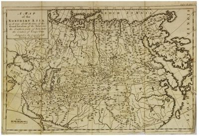

A New Map of the Northern Asia drawn from the most Authentick Observations., by Tirion 1, 1729. Image: British Library. One of the 137 maps of Tartary in the TARTARY Project's collection at HKUST, catalogued on tartary.vercel.app. Its texts have not been transcribed yet.